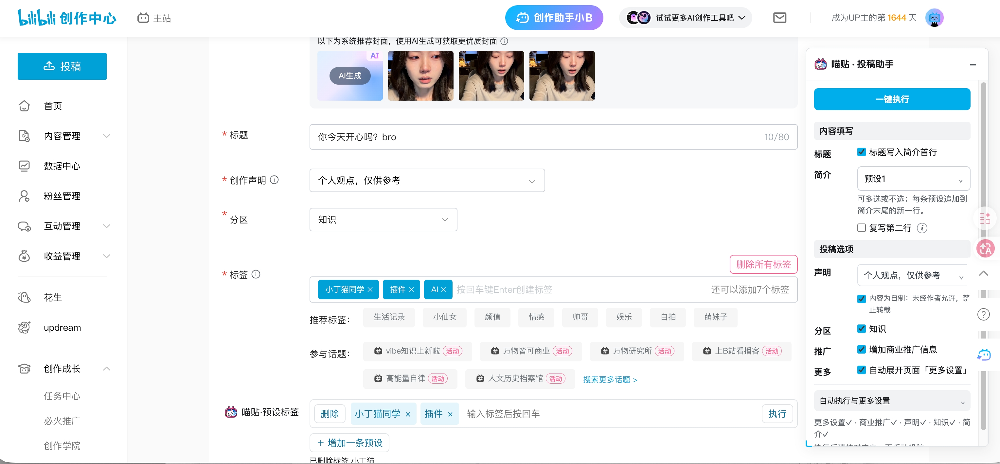
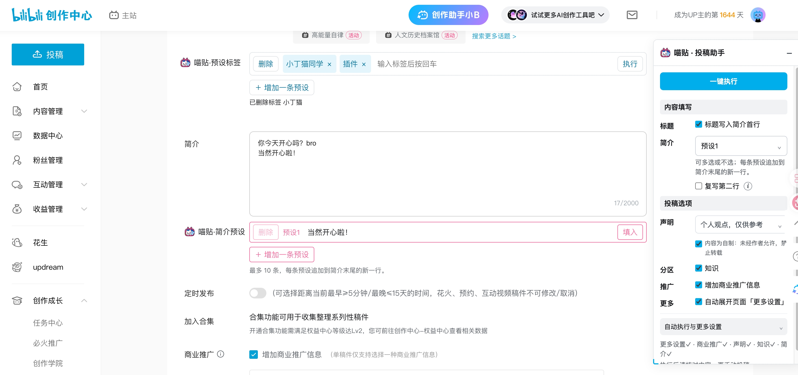

预设先备好，
末尾按行追加。
在简介框下方保存最多 10 条预设。投稿助手的「简介」下拉框可多选或不选，每条选中的内容分别追加为末尾新一行。
勾选「标题写入简介首行」会替换首行，保留其余正文。重复执行会再次追加，请核对后再投稿。
查看简介操作步骤 →一组一组存，
按需点执行。
每条标签输入后按回车保存；最多 10 组，每组 10 个标签。每组右侧的「执行」独立操作，不包含在投稿助手的「一键执行」里。
已有标签会跳过，按剩余名额添加并等待 B 站确认。完成轻提示显示在这组预设上方。
查看增删与执行规则 →复制完整信息，
关联分别填好。
视频封面的蓝色按钮复制 BV + 标题，粉红色按钮复制标题 + 链接。两颗按钮始终一行，顶部历史、收藏、动态浮层不显示它们。
关联视频库读取本人已发布稿件与合集，支持搜索、刷新及继续加载；点击「填入」分别写入链接与描述，粉红色「播放」另开视频页。
查看关联视频操作 →入口在工具栏，
提示跟着操作走。
菜单中的「引导教程」可以重新开始实操引导。首页会固定一个示例封面，高亮蓝色按钮；标签引导分别框选输入区、执行按钮和新增按钮。
引导可跳过或关闭，需等待的操作完成后自动继续；说明步骤可以手动下一步。标题与简介成功后，在页面上方中央显示轻提示。
查看菜单与检查更新 →选你的浏览器，装好就能用。
推荐从浏览器商店安装，安装完成后刷新 B 站页面。
浏览器商店
推荐方式Chrome 安装方式
桌面网页版Chrome 应用商店 · 准备上架
- 下载并解压
Chrome 商店版准备上架，目前可下载 8.2.1 离线候选版，解压后保留完整文件夹。
- 打开扩展管理
从浏览器菜单进入扩展管理页面，开启「开发者模式」。
- 加载喵贴
选择「加载已解压的扩展程序」，选中含 manifest.json 的文件夹，再刷新 B 站页面。
Firefox 安装方式
桌面网页版Firefox 附加组件
- 打开应用商店
点击上方入口，进入喵贴的商店详情页。
- 添加到浏览器
按商店页面提示完成安装；版本与更新时间以商店页面为准。
- 刷新 B 站
打开 B 站网页版，刷新页面后使用封面复制按钮或投稿助手。
Edge 安装方式
桌面网页版Microsoft Edge 商店
- 打开应用商店
点击上方入口，进入喵贴的商店详情页。
- 添加到浏览器
按商店页面提示完成安装；版本与更新时间以商店页面为准。
- 刷新 B 站
打开 B 站网页版，刷新页面后使用封面复制按钮或投稿助手。
360 浏览器 安装方式
桌面网页版360 扩展商店
- 打开应用商店
点击上方入口，进入喵贴的商店详情页。
- 添加到浏览器
按商店页面提示完成安装；版本与更新时间以商店页面为准。
- 刷新 B 站
打开 B 站网页版，刷新页面后使用封面复制按钮或投稿助手。
Dia 安装方式
桌面网页版Chrome 应用商店 · 准备上架
- 下载并解压
Chrome 商店版准备上架，目前可下载 8.2.1 离线候选版，解压后保留完整文件夹。
- 打开扩展管理
从浏览器菜单进入扩展管理页面，开启「开发者模式」。
- 加载喵贴
选择「加载已解压的扩展程序」，选中含 manifest.json 的文件夹，再刷新 B 站页面。
Comet 安装方式
桌面网页版Chrome 应用商店 · 准备上架
- 下载并解压
Chrome 商店版准备上架，目前可下载 8.2.1 离线候选版，解压后保留完整文件夹。
- 打开扩展管理
从浏览器菜单进入扩展管理页面，开启「开发者模式」。
- 加载喵贴
选择「加载已解压的扩展程序」，选中含 manifest.json 的文件夹，再刷新 B 站页面。
百分浏览器 安装方式
桌面网页版Chrome 应用商店 · 准备上架
- 下载并解压
Chrome 商店版准备上架，目前可下载 8.2.1 离线候选版，解压后保留完整文件夹。
- 打开扩展管理
从浏览器菜单进入扩展管理页面，开启「开发者模式」。
- 加载喵贴
选择「加载已解压的扩展程序」，选中含 manifest.json 的文件夹，再刷新 B 站页面。
Safari 安装方式
桌面网页版Safari 版暂未发布。
99🔪注册费，攒攒钱再上传。
开发者会员费为 US$99 / 年，非用户安装费。
UC 浏览器 安装方式
桌面网页版先确认桌面版支持脚本管理器；喵贴扩展兼容性待验证。
- 确认扩展支持
在 UC 浏览器 桌面版的扩展管理或应用中心，确认能安装 Tampermonkey。不同版本的支持情况可能不同。
- 安装脚本管理器
通过 Tampermonkey 官网选择适用版本，并完成安装。若当前浏览器不支持，可选择 Edge、Firefox 或 Chrome。
- 安装并启用喵贴
点击「安装喵贴脚本」，在管理器中确认安装，再刷新 B 站网页版。
夸克浏览器 安装方式
桌面网页版先确认桌面版支持脚本管理器；喵贴扩展兼容性待验证。
- 确认扩展支持
在 夸克浏览器 桌面版的扩展管理或应用中心，确认能安装 Tampermonkey。不同版本的支持情况可能不同。
- 安装脚本管理器
通过 Tampermonkey 官网选择适用版本，并完成安装。若当前浏览器不支持，可选择 Edge、Firefox 或 Chrome。
- 安装并启用喵贴
点击「安装喵贴脚本」，在管理器中确认安装，再刷新 B 站网页版。
QQ 浏览器 安装方式
桌面网页版先确认桌面版支持脚本管理器；喵贴扩展兼容性待验证。
- 确认扩展支持
在 QQ 浏览器 桌面版的扩展管理或应用中心，确认能安装 Tampermonkey。不同版本的支持情况可能不同。
- 安装脚本管理器
通过 Tampermonkey 官网选择适用版本，并完成安装。若当前浏览器不支持，可选择 Edge、Firefox 或 Chrome。
- 安装并启用喵贴
点击「安装喵贴脚本」，在管理器中确认安装，再刷新 B 站网页版。
搜狗浏览器 安装方式
桌面网页版先确认桌面版支持脚本管理器；喵贴扩展兼容性待验证。
- 确认扩展支持
在 搜狗浏览器 桌面版的扩展管理或应用中心，确认能安装 Tampermonkey。不同版本的支持情况可能不同。
- 安装脚本管理器
通过 Tampermonkey 官网选择适用版本，并完成安装。若当前浏览器不支持，可选择 Edge、Firefox 或 Chrome。
- 安装并启用喵贴
点击「安装喵贴脚本」，在管理器中确认安装，再刷新 B 站网页版。
8.2.1 扩展版准备上架；Chrome 系列暂为商店搜索入口。以上准备版版本及更新时间对应本次资料，商店实际上线版本和日期以商店为准。脚本版 8.2.1 可用，选择一种方式安装即可。
商店访问不了？还有备用方案。
商店无法访问时，可使用油猴脚本。也可选择下方离线候选版。
Chrome 离线安装
8.2.1 候选版版本：8.2.1 · 更新时间：2026-11-23
下载离线安装包 ↓解压后开启开发者模式，加载 biliclip 文件夹。需手动更新，候选版尚待真实环境验证。安装步骤 →
油猴脚本安装
备用方式- 安装脚本管理器
选择 Tampermonkey 或 Violentmonkey。
- 允许用户脚本运行
Chrome 138+：扩展管理 → 脚本管理器详情 → 开启「允许运行用户脚本」。其他浏览器按管理器提示设置。
查看权限设置步骤 → - 安装喵贴，刷新 B 站
在管理器打开的页面确认安装。
安装脚本 8.2.1 ↓版本：8.2.1 · 更新时间：2026-11-23
操作前，先确认这几件事。
一键执行会添加标签或替我投稿吗？
不会执行标签预设，也不会替你提交投稿。标签要点击对应组的「执行」，最终投稿仍需你核对表单后自行提交。
简介会覆盖哪些内容？
勾选标题选项时只替换简介首行；所选简介预设逐条追加到末尾。原有其余正文保留。每次执行都会再次追加，不会自动去重。
扩展和脚本需要一起装吗？
只启用一种，避免重复按钮或操作冲突。安装、更新或切换方式后刷新 B 站页面；不同渠道的数据不会自动迁移。
为什么商店版和这里的功能不同？
本页按当前 8.2.1 脚本及待发布扩展编写，旧商店版本可能不同。Chrome 系列目前为商店搜索入口，离线版为待验证候选，实际商店版本以商店为准。
这些演示会改动我的账号吗？
不会。本页只使用本地示例数据；真实组件截图并非账号实机认证。视频库需要在 B 站登录后使用。查看隐私与权限。